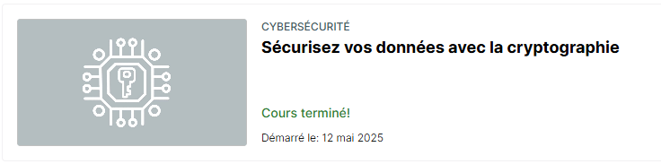

Noppe Hugo
-
Noppe Hugo
Etudiant
Ephec
-
Mes projets
-
Qui
suis-je ?Je m'appelle Hugo étudiant en informatique à l’EPHEC. Passionné par les technologies numériques, je combine mon intérêt pour le code avec une sensibilité artistique nourrie par la photographie et le voyage.
Curieux de nature, j’aime apprendre constamment de nouvelles choses, que ce soit dans le domaine du développement, des outils visuels ou en découvrant d’autres cultures. Sociable et ouvert, j'apprécie particulièrement les projets collaboratifs où l’échange d’idées fait grandir tout le monde.

-
-
Portfolio
×Cryptographie & Sécurité
J’ai suivi le module « Sécurisez vos données avec la cryptographie » sur OpenClassrooms. J’y ai découvert les fondements de la cryptographie moderne, les techniques de chiffrement (AES, RSA), le hachage sécurisé (SHA-256, salage) et les protocoles TLS/SSL.
Ces compétences ont été mises en pratique dans le développement de Ergogo, ma plateforme de suivi thérapeutique. Elles m’ont permis de sécuriser les données sensibles des patients via JWT, cookies httpOnly et gestion robuste de l’authentification.
Compétences acquises :
- Chiffrement symétrique et asymétrique
- Fonctions de hachage (SHA-256, salage)
- Protocoles de sécurité (TLS/SSL)
- Authentification sécurisée

- Noppe Hugo
- Mes Projets
- A propos
- Contact
- Portfolio